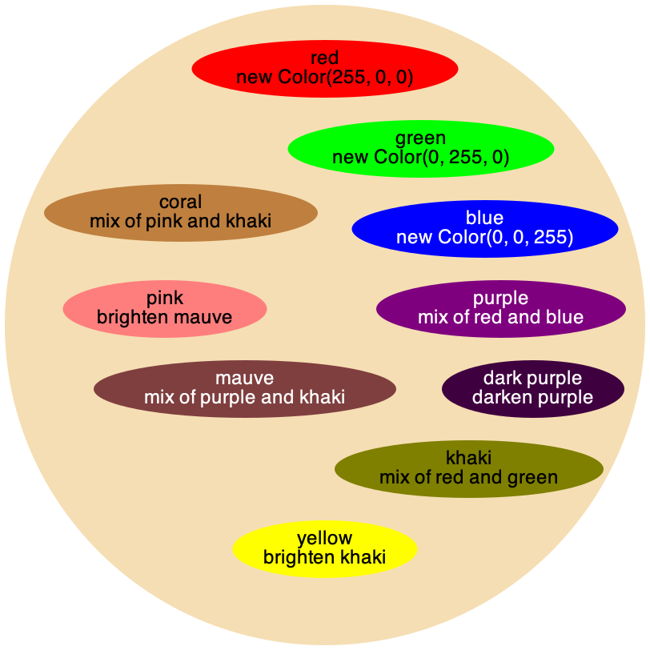

Assignment 3: Tree-Shaped Data
Goals: Practice designing the representation of and writing methods for tree-shaped data.
You should submit one .java file containing the solution to this problem.
Be sure to properly test your code and write purpose statements for your methods. A lack of tests and documentation will result in a lower grade! Remember that testing requires you to make some examples of data in an examples class.
Problem 1
For this problem, you will need to import java.awt.Color at the top of your file, just like you import the tester library.
Without properly completing exercises 1 and 2, the rest of this assignment will effectively be impossible. Please do these exercises ASAP, and if you find them difficult, email me sooner rather than later.
For this problem we will use classes that represent paint on a painter’s palette. Each blob of paint is either a Solid or a Combo. A Solid has a name and a Color. A Combo has a name and an operation which is some kind of IMixture, describing the recipe for how the combo was made.
There are three kinds of mixtures: Darken (darkens a paint), Brighten (brightens a paint), and Blend (mixes two paints together).
Design the classes (and interfaces) needed to represent the given information.
In an ExamplesPaint class define example data that represents the following painter’s palette (the colors of the words are irrelevant, they change only to aid readability):

For more info on the Color class, you can look at the documentation. However, you shouldn’t need to read any more outside of what is given in this assignment.
You should define each blob of paint by its name (e.g. "red" or "dark purple"), but with Java naming conventions for fields (e.g. darkPurple). Remember to build your examples with the simplest data at the top and to grow them as you go (such as we did for lists and trees in class).
The Color blue can be obtained by either creating it from scratch with new Color(0, 0, 255) or using the constant Color.BLUE. This also applies to red and green.
If you’re curious, the method brighter produces a color with red, green, and blue values increased by some arbitrary amount method darker similarly produce a color with red, green, and blue values decreased by the opposite amount. The documentation for these methods deliberately does not specify the amount, and it may vary between different versions of Java.
Design the method getFinalColor that computes the final color of this paint. Note that brighter and darker are two methods available on Color objects (which is available when you import java.awt.Color at the top of your file). For blending you should add half of the red, green, and blue values for each of the paint colors involved in order to produce the blended color. To get a color’s red value, for example, you can call the getRed method.Design the method countPaints that computes the number of solid paints involved in producing the final color of this Paint. For a darkened paint we assume we added solid black and for a brightened paint we assume we added solid white.
Note: Make sure you count every paint each time it is referenced.
For example, dark purple is created by blending red and blue and then adding solid black (to darken it). Therefore the result of calling countPaints on the dark purple paint is 3.
Design the method formulaDepth, that computes how deeply mixtures are nested in the formula for this Paint. For example, the formulaDepth of dark purple is 2. If we blend dark purple with itself, the resulting paint we created would have a formula depth of 3.
Design the method invert, which produces the paint as is, except all Darken mixtures should become Brighten mixtures and vice versa. The names of all of the paints and the base colors should remain the same.
Design the method mixingFormula that takes an integer depth, and produces a String representing the contents of this paint, where the formula for the paint has been expanded only depth times. For example, the mixingFormula at depth 0 for pink paint is "pink", at depth 1 is "brighten(mauve)", at depth 2 is "brighten(blend(purple, khaki))", and at depth 3 or more is "brighten(blend(blend(red, blue), blend(red, green)))".
In more detail: invoking mixingFormula on a paint produces its name if the given depth is less than or equal to 0, and the formula of its mixture (at that depth) otherwise.
The following Java syntax will be helpful:To see if an integer a is less than or equal to an integer b, they can be compared by writing a <= b.
To append two Strings s1 and s2 together, one can write s1 + s2 or s1.concat(s2).
Hint: As you recur down the structure of this tree, think carefully about the value of depth you pass into recursive calls. Also, make sure you understand (and write tests for) the pink examples above before proceeding to write the actual methods.